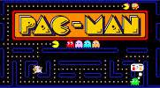

The player competes in a series of one-on-one matches against a series of computer-controlled opponents or
in a single match against another player. Each match is a series of rounds in which the player must defeat
their opponent within 100 seconds. If a match ends before a fighter is knocked out, then the fighter with
the greater amount of hit points left will be declared the round's winner. The player must win two rounds in
order to defeat their opponent and proceed to the next battle. If the third round ends in a tie, then the
computer-controlled opponent will win by default, or both players will lose. During the single-player mode,
the player can continue after losing and fight against the opponent they lost the match with. Likewise, a
second player can interrupt a single-player match and challenge the other player to a match.
The graphics for this game are very retro as it is an older game and it is on an arcade machine but they
are very simple graphics and I do love the retro graphics and how even the newer games are also retro
which I think is just so cool that they are sticking with the original design.
I don't really know the story for street fighter but overall it is very simple to understand. You can
either play against another person or play against the machine. You select your character and you get
transported to an arena where you fight the other player or machine until there is only one winner.
The performance for the game is obviously not as good as the modern games we have now but for the time
the game was released it was one of the best arcade games out there and one of the most popular. Along
with pacman when you ask people name an arcade game these 2 are some answers you get alot. Depending on
the machine some machines can have bugs which makes it more difficult to play however the game itself is
not bug free. Sometimes there can be bugs but it is to be expected when playing the original game from
quite a bit ago.
overall I love the retro game style and how they have kept true to that throughout the making of the
newer games. The game lost points for me just because you do get quite a few bugs on it compared to more
modern games but whenever I go to an arcade this is definitely one of the games I always play because
its so fun to compete against family and friends. I do recommend playing this next time your in an
arcade.
The Trailer
Game 2 - Pac-Man

Game Description
Pac-Man is an action maze chase game where the player guides the titular Pac-Man across an enclosed maze.
Pac-Man's goal is to eat all 240 dots and the four Energizers within the maze to clear the round, while
avoiding the four Ghost Monsters that roam around the maze. The player uses the control stick to move
Pac-Man up, down, left and right across the maze walls.
This paragraph was taken from the Pac-Man Wiki website
go to website
Pac-Man Review
The graphics aren't the best but to be honest it is to be expected as it is a very old game and it is on
a pac-man arcade machine. On the newer versions it is alot better however when talking about the
original it is obviously not the best.
There isn't really a story for pac-man. The main aim is to try and get as far as you can in the game by
eating little dots while avoiding the ghosts. Once all the dots in the map have been eaten it resets but
your points stay the same so you can keep collecting points. I do enjoy it however I only really play it
in arcades.
The performance is alot like the graphics. On the newer ones I have read that it is quite good however
on the original it can be a little slow however I haven't experienced anything awful with it.
Overall I don't play this game often only when in the arcade to pass the time but it is very iconic to
the gaming industry so my rating is mainly based on that more than anything else.